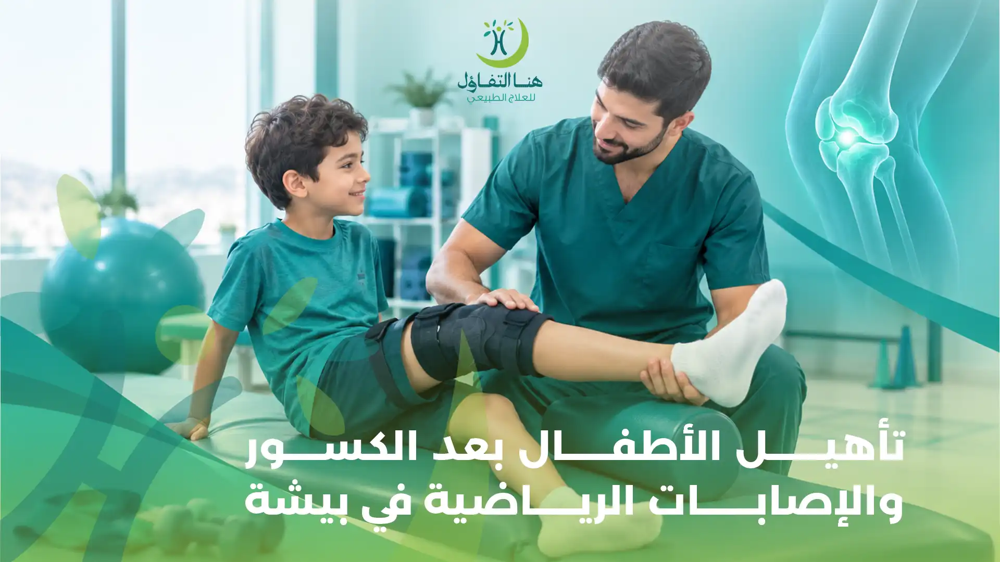

يتعرض الأطفال خلال مراحل النمو المختلفة للعديد من الإصابات نتيجة الحركة المستمرة واللعب وممارسة الأنشطة الرياضية، وقد تتراوح هذه الإصابات بين الالتواءات والشد العضلي والكدمات، وصولًا إلى الكسور التي قد تحدث أثناء اللعب أو السقوط أو ممارسة الرياضة. وعلى الرغم من أن كثيرًا من إصابات الأطفال تتحسن مع الرعاية الطبية المناسبة، فإن بعض الحالات تحتاج إلى برنامج تأهيل حركي يساعد الطفل على استعادة الحركة والقوة والقدرة على ممارسة أنشطته اليومية بصورة تدريجية.
ويُعد تأهيل الأطفال بعد الكسور والإصابات الرياضية في بيشة من الخدمات التي يبحث عنها أولياء الأمور لمساعدة أطفالهم على العودة إلى الحركة بعد الإصابة، خاصة عند حدوث تيبس في المفاصل، أو ضعف في العضلات، أو صعوبة في المشي، أو عدم القدرة على استخدام الطرف المصاب بصورة طبيعية.
ويؤدي العلاج الطبيعي للأطفال دورًا مهمًا في مرحلة التعافي، حيث يمكن أن يتضمن تقييم الحركة والقوة العضلية والتوازن، واختيار التمارين العلاجية المناسبة لعمر الطفل ونوع الإصابة ومرحلة الالتئام، مع مراعاة تعليمات الطبيب المعالج.
في مركز هنا التفاؤل للعلاج الطبيعي والتأهيل الطبي في بيشة، يمكن لأولياء الأمور الاستفسار عن خدمات العلاج الطبيعي والتأهيل المتاحة للأطفال، ومعرفة مدى ملاءمتها لاحتياجات الطفل بعد الكسور والإصابات الرياضية. فالهدف من التأهيل ليس مجرد انتهاء الألم، بل دعم استعادة الوظائف الحركية ومساعدة الطفل على العودة التدريجية إلى اللعب والدراسة والأنشطة اليومية.
ما المقصود بتأهيل الأطفال بعد الكسور والإصابات الرياضية؟
تأهيل الأطفال هو مجموعة من الإجراءات والأنشطة العلاجية التي تهدف إلى مساعدة الطفل على استعادة قدراته الحركية والوظيفية بعد الإصابة، وفقًا لطبيعة الحالة ومرحلة التعافي.
فعند تعرض الطفل لكسر أو إصابة رياضية، قد يحتاج إلى تثبيت الطرف المصاب أو تقليل الحركة لفترة يحددها الطبيب. وبعد انتهاء مرحلة التثبيت والسماح بالحركة، قد تظهر بعض الصعوبات، مثل ضعف العضلات أو محدودية حركة المفصل أو صعوبة تحميل الوزن على الطرف المصاب.
وهنا يأتي دور التأهيل الطبيعي في العمل على استعادة القدرات التي تأثرت بالإصابة، من خلال برنامج تدريجي يتناسب مع احتياجات الطفل.
وقد تشمل أهداف التأهيل:
- تحسين مدى حركة المفاصل بعد الإصابة أو التثبيت.
- استعادة القوة العضلية بصورة تدريجية.
- تحسين التوازن والتناسق الحركي.
- تدريب الطفل على المشي والحركة بصورة آمنة عند الحاجة.
- تحسين القدرة على استخدام الطرف المصاب في الأنشطة اليومية.
- دعم العودة التدريجية إلى اللعب والرياضة بعد السماح الطبي.
- تقليل تأثير قلة الحركة خلال فترة الإصابة على القدرات الوظيفية.
ويختلف البرنامج من طفل إلى آخر، فلا يمكن تطبيق التمارين نفسها على جميع الأطفال، لأن نوع الإصابة ومكانها وعمر الطفل ومرحلة التئام العظام عوامل تؤثر في اختيار الخطة العلاجية.
أكثر الكسور شيوعًا لدى الأطفال التي قد تحتاج إلى التأهيل
تختلف الكسور التي يتعرض لها الأطفال حسب العمر وطبيعة النشاط ومستوى الحركة، وقد تحدث نتيجة السقوط أو الحوادث أو الإصابات أثناء ممارسة الرياضة.
ومن أبرز أنواع الكسور التي قد تتطلب متابعة وتأهيلًا بعد انتهاء مرحلة التثبيت:
1. كسور الذراع والساعد
تُعد كسور الذراع والساعد من الإصابات التي قد تحدث عند السقوط ومحاولة الطفل حماية نفسه باستخدام يديه. وقد يحتاج الطفل إلى تثبيت العظام بالجبس أو وسيلة طبية أخرى وفقًا لنوع الكسر. وبعد السماح بالحركة، قد يواجه الطفل صعوبة في تحريك الكوع أو الرسغ، أو ضعفًا في عضلات الذراع نتيجة فترة التثبيت. وقد يساعد التأهيل الطبيعي، وفقًا لتعليمات الطبيب، على استعادة مدى الحركة وتحسين القوة العضلية والقدرة على استخدام اليد في الأنشطة اليومية، مثل الكتابة والرسم وحمل الأشياء الخفيفة.
2. كسور الساق
قد تؤثر كسور الساق في قدرة الطفل على الوقوف والمشي وتحميل الوزن على الطرف المصاب. وبعد التئام الكسر والسماح بالحركة، قد يحتاج الطفل إلى استعادة القوة العضلية والتوازن والقدرة على المشي بصورة تدريجية. وقد يركز برنامج التأهيل على تحسين حركة المفاصل المرتبطة بالساق، وتنشيط العضلات، والتدريب على المشي وفقًا لمدى السماح بالتحميل على الطرف المصاب.
3. كسور الكاحل والقدم
قد تؤدي كسور الكاحل والقدم إلى صعوبة في الوقوف والمشي والاتزان، خاصة بعد فترة من تثبيت المفصل. ويعتمد التأهيل على طبيعة الكسر ومرحلة الالتئام، وقد يتضمن تحسين مدى حركة الكاحل، وتقوية العضلات المحيطة، وتدريب الطفل على استعادة نمط المشي بصورة تدريجية.
4. كسور حول مفاصل الأطفال
تحتاج الكسور التي تحدث بالقرب من مفاصل الطفل إلى اهتمام خاص، لأن بعض هذه الإصابات قد تؤثر في حركة المفصل أو مناطق النمو الموجودة في العظام. لذلك يجب أن تتم متابعة هذه الحالات طبيًا، مع الالتزام بتعليمات الطبيب بشأن الحركة والتحميل والتمارين. وقد يحتاج الطفل إلى تقييم حركي بعد السماح بالتأهيل للتأكد من عدم وجود محدودية في الحركة أو ضعف يؤثر في استخدام المفصل.
الإصابات الرياضية الشائعة لدى الأطفال
لا تقتصر إصابات الأطفال على الكسور فقط، فممارسة الرياضة والأنشطة الحركية قد ترتبط بإصابات أخرى تحتاج إلى تقييم وعلاج مناسب.
1. التواء الكاحل
يحدث التواء الكاحل عندما تتعرض الأربطة المحيطة بالمفصل للتمدد أو الإصابة نتيجة حركة مفاجئة أو هبوط غير مناسب بعد القفز. وقد تظهر أعراض مثل الألم والتورم وصعوبة المشي أو تحميل الوزن على القدم. وبعد تقييم الإصابة وتحديد شدتها، قد يتضمن التأهيل تمارين لتحسين الحركة والقوة العضلية والتوازن، بهدف دعم استقرار المفصل والعودة التدريجية للنشاط الرياضي.
2. الشد والتمزق العضلي
قد يتعرض الطفل للشد العضلي أو إصابة في الألياف العضلية أثناء الجري أو القفز أو تغيير اتجاه الحركة بصورة مفاجئة. وتختلف شدة الإصابة، فقد تكون بسيطة وتتحسن مع الرعاية المناسبة، بينما تحتاج الإصابات الأكثر شدة إلى تقييم طبي ومتابعة. ويُحدد توقيت بدء التمارين العلاجية وفقًا لطبيعة الإصابة، وقد تشمل الخطة استعادة الحركة والقوة والتحمل تدريجيًا.
3. إصابات الركبة
قد تحدث إصابات الركبة لدى الأطفال أثناء الجري أو القفز أو ممارسة الرياضات التي تتطلب تغيير اتجاه الحركة باستمرار. وقد تشمل هذه الإصابات التواء الأربطة أو إصابات الغضاريف أو الأنسجة المحيطة بالمفصل. وتحتاج إصابات الركبة إلى تقييم دقيق، خاصة إذا صاحبها تورم واضح أو عدم ثبات المفصل أو صعوبة في المشي. وبعد تحديد طبيعة الإصابة، يمكن إعداد برنامج تأهيل مناسب لاستعادة القوة والتحكم الحركي.
4. إصابات الكتف والذراع
قد تحدث إصابات الكتف والذراع أثناء السقوط أو ممارسة الرياضات التي تتطلب استخدام الأطراف العلوية بصورة متكررة. وقد تؤثر الإصابة في قدرة الطفل على رفع الذراع أو حمل الأشياء أو المشاركة في الأنشطة الرياضية. ويعتمد التأهيل على نوع الإصابة، وقد يتضمن تحسين حركة المفصل وتقوية العضلات المحيطة به بصورة تدريجية بعد السماح الطبي.
5. إصابات العضلات والأوتار
قد تنتج بعض إصابات العضلات والأوتار عن زيادة الحمل التدريبي أو تكرار الحركات أو عدم التدرج في ممارسة النشاط الرياضي. وتحتاج هذه الإصابات إلى تحديد سببها ودرجتها، مع تنظيم العودة إلى النشاط وتجنب تحميل الأنسجة المصابة قبل استكمال التعافي.
أعراض قد تشير إلى حاجة الطفل للتقييم والتأهيل بعد الإصابة
بعد الكسور أو الإصابات الرياضية، قد تظهر بعض العلامات التي تشير إلى تأثر الحركة أو القوة العضلية، وقد تستدعي تقييمًا لدى الطبيب أو اختصاصي العلاج الطبيعي بحسب مرحلة الإصابة.
ومن هذه العلامات:
- صعوبة تحريك المفصل بعد انتهاء فترة التثبيت والسماح بالحركة.
- ضعف الطرف المصاب مقارنة بالطرف الآخر.
- صعوبة المشي أو الجري بعد التعافي من الإصابة.
- عدم القدرة على الوقوف أو تحميل الوزن وفقًا لما هو متوقع في مرحلة التعافي.
- ضعف التوازن أو الشعور بعدم الثبات أثناء الحركة.
- صعوبة استخدام اليد في الكتابة أو الإمساك بالأشياء.
- تجنب الطفل استخدام الطرف الذي تعرض للإصابة.
- استمرار محدودية الحركة بعد السماح بالعودة إلى النشاط.
تنبيه:
ولا تعني هذه العلامات بالضرورة وجود مشكلة دائمة، لكنها قد تشير إلى الحاجة إلى تقييم مناسب لتحديد أسبابها ووضع خطة للتعامل معها. أما إذا ظهر ألم شديد متزايد، أو تورم متفاقم، أو تغير في لون الطرف أو برودته، أو خدر جديد، أو ألم شديد مع الحركة أو التحميل، فيجب مراجعة الطبيب بصورة عاجلة، وعدم البدء بالتمارين من تلقاء النفس.
دور العلاج الطبيعي في تأهيل الأطفال بعد الكسور
قد يكون العلاج الطبيعي جزءًا مهمًا من مرحلة التعافي بعد الكسور، خاصة عندما تؤثر الإصابة أو فترة التثبيت في حركة المفاصل أو القوة العضلية أو القدرة على المشي.
ويبدأ التأهيل بعد التأكد من أن حالة الكسر تسمح بالحركة والتمارين، وبما يتوافق مع تعليمات الطبيب المعالج.
أولًا: تقييم الحركة والقوة العضلية
قبل وضع برنامج التأهيل، يحتاج الطفل إلى تقييم يناسب عمره ونوع الإصابة. وقد يشمل التقييم: مراجعة نوع الكسر وموضعه ومدة التثبيت، معرفة تعليمات الطبيب بشأن الحركة وتحميل الوزن، تقييم مدى حركة المفاصل، ملاحظة القوة العضلية، تقييم التوازن والمشي، وتحديد الأنشطة اليومية التي يواجه الطفل صعوبة في أدائها.
ثانيًا: تحسين مدى حركة المفاصل
قد تؤدي فترة تثبيت الطرف بالجبس أو وسائل التثبيت الأخرى إلى انخفاض حركة المفاصل القريبة من منطقة الإصابة. وقد يركز التأهيل على استعادة الحركة تدريجيًا من خلال تمارين مناسبة، مع مراعاة عدم إجبار المفصل على الحركة أو تجاوز الحدود التي يسمح بها الطبيب. ويختلف توقيت ونوع التمارين بحسب مكان الكسر ومدى التئامه.
ثالثًا: استعادة القوة العضلية
قد تتأثر قوة العضلات بعد الإصابة بسبب قلة الحركة أو عدم استخدام الطرف المصاب لفترة. لذلك قد يتضمن برنامج التأهيل تمارين تدريجية لتنشيط العضلات وتحسين القوة والتحمل، مع زيادة مستوى التمارين وفقًا لاستجابة الطفل. وتساعد استعادة القوة العضلية على تحسين القدرة على أداء الحركات اليومية، مثل الوقوف والمشي وصعود الدرج.
رابعًا: تحسين التوازن والتناسق الحركي
قد يواجه الطفل صعوبة في التوازن بعد إصابات الساق والكاحل والقدم، خاصة إذا ابتعد عن الحركة لفترة طويلة. وقد تتضمن الخطة تمارين مناسبة لتحسين التحكم في وضع الجسم والتناسق بين العضلات أثناء الوقوف والمشي والحركة.
خامسًا: تدريب الطفل على المشي
في بعض حالات كسور الأطراف السفلية، قد يحتاج الطفل إلى التدريب على استعادة نمط المشي بعد السماح بتحميل الوزن. وقد يشمل ذلك التدريب على الوقوف والانتقال بين الأوضاع والمشي لمسافات مناسبة، ثم زيادة النشاط بصورة تدريجية وفقًا لقدرة الطفل وتعليمات الطبيب. والهدف هو تحسين القدرة على الحركة بصورة آمنة، وليس إجبار الطفل على المشي قبل جاهزيته الطبية والوظيفية.
دور العلاج الطبيعي في تأهيل الأطفال بعد الإصابات الرياضية
تختلف أهداف التأهيل بعد الإصابات الرياضية عن التأهيل بعد الكسور في بعض الجوانب، حيث لا يقتصر الأمر على استعادة الحركة اليومية، بل قد يشمل أيضًا استعادة القدرة على أداء المهارات الحركية المطلوبة لممارسة الرياضة.
1. استعادة الحركة الطبيعية
قد تؤثر الإصابة الرياضية في مدى حركة المفصل أو العضلات، ولذلك يبدأ التأهيل باستعادة الحركة المناسبة تدريجيًا وفقًا لنوع الإصابة. ويتم اختيار التمارين بحيث لا تسبب تحميلًا زائدًا على الأربطة أو العضلات أو الأوتار المصابة.
2. تقوية العضلات المحيطة بالإصابة
تساعد العضلات القوية والمتناسقة على دعم المفاصل أثناء الحركة، ولذلك قد يتضمن التأهيل تمارين لتقوية العضلات المرتبطة بالمنطقة المصابة. ويتم التدرج في شدة التمارين بما يتناسب مع قدرة الطفل ومرحلة التعافي.
3. تدريب التوازن والتحكم الحركي
يُعد التوازن والتحكم في الحركة من العناصر المهمة في الأنشطة الرياضية، خاصة الرياضات التي تتطلب الجري والقفز وتغيير اتجاه الحركة. وقد يتضمن التأهيل تدريبات متدرجة لتحسين ثبات الجسم والتحكم في حركة الأطراف، مع مراعاة سلامة المفصل المصاب.
4. استعادة المهارات الحركية الرياضية
بعد تحسن الحركة والقوة والتوازن، قد ينتقل الطفل إلى تدريبات أكثر ارتباطًا بطبيعة الرياضة التي يمارسها، مثل الجري أو القفز أو تغيير الاتجاه، بشرط الحصول على السماح الطبي واستيفاء متطلبات الجاهزية. ولا ينبغي العودة إلى التدريبات والمباريات لمجرد اختفاء الألم؛ إذ يجب التأكد من استعادة الوظائف المطلوبة وعدم وجود علامات تشير إلى استمرار الإصابة.
5. العودة التدريجية إلى ممارسة الرياضة
تحتاج العودة إلى الرياضة بعد الإصابة إلى تدرج ومتابعة، وقد تتطلب تقييم القوة ومدى الحركة والتوازن والقدرة على أداء المهارات الرياضية. ويتم تحديد توقيت العودة بالتنسيق مع الطبيب واختصاصي التأهيل، وفقًا لنوع الإصابة واستجابة الطفل.
مراحل تأهيل الطفل بعد الكسر أو الإصابة الرياضية
لا تسير جميع الحالات في مراحل متطابقة، لكن يمكن تقسيم رحلة التأهيل بصورة عامة إلى مراحل تساعد على فهم طبيعة التعافي.
المرحلة الأولى: حماية المنطقة المصابة
تكون الأولوية في هذه المرحلة لحماية العظام أو الأنسجة المصابة، والالتزام بتعليمات الطبيب بشأن التثبيت والراحة والحركة والتحميل. ولا يبدأ الطفل تمارين التأهيل التي تتطلب تحريك المنطقة المصابة أو تحميل الوزن عليها إلا بعد السماح الطبي.
المرحلة الثانية: استعادة الحركة تدريجيًا
بعد السماح بالحركة، قد يبدأ برنامج التأهيل بتمارين مناسبة لتحسين مدى حركة المفاصل وتقليل تأثير فترة التثبيت. ويجب أن تتم هذه المرحلة بصورة تدريجية دون إجبار الطفل على الحركة المؤلمة أو تجاوز الحدود المسموح بها.
المرحلة الثالثة: تقوية العضلات وتحسين التوازن
بعد تحسن الحركة واستقرار الإصابة، قد تتم إضافة تمارين لتقوية العضلات وتحسين التحكم الحركي والتوازن. ويتم تحديد شدة التمارين وفقًا لاستجابة الطفل وقدرته على أداء الحركات بأمان.
المرحلة الرابعة: استعادة النشاط اليومي والرياضي
تتضمن هذه المرحلة تحسين القدرة على أداء الأنشطة اليومية، ثم الانتقال إلى المهارات الرياضية عند الحاجة. ويجب أن تكون العودة إلى الرياضة مبنية على تقييم الجاهزية، وليس على مرور فترة زمنية محددة فقط.
تمارين العلاج الطبيعي للأطفال بعد الكسور والإصابات الرياضية
تختلف التمارين المناسبة باختلاف نوع الإصابة والعمر ومرحلة التعافي، ولذلك لا يمكن تقديم قائمة واحدة من التمارين لجميع الأطفال.
لكن قد تتضمن برامج التأهيل بعض الأنواع التالية عندما يسمح الطبيب بها:
تمارين مدى الحركة
تساعد على تحسين حركة المفاصل التي تأثرت بفترة التثبيت أو الإصابة.
تمارين التقوية العضلية
تستهدف العضلات التي تحتاج إلى استعادة قوتها وتحملها تدريجيًا.
تمارين التوازن
تساعد على تحسين ثبات الجسم والتحكم في الحركة، خاصة بعد إصابات الأطراف السفلية.
تمارين المشي
قد تُستخدم في حالات إصابات الساق والقدم بعد السماح بالتحميل، بهدف استعادة نمط المشي بصورة تدريجية.
التدريبات الوظيفية
تهدف إلى مساعدة الطفل على أداء أنشطة مثل الوقوف والجلوس وصعود الدرج واستخدام اليدين في المهام اليومية.
التدريبات الرياضية المتخصصة
قد تُضاف في المراحل المتقدمة لمساعدة الطفل على استعادة المهارات المطلوبة للرياضة التي يمارسها.
تنبيه:
ومن المهم عدم تجربة تمارين القفز أو الجري أو الشد القوي أو تحميل الأوزان قبل التأكد من ملاءمتها للحالة. كما يجب إيقاف النشاط عند ظهور ألم متزايد أو تورم جديد أو أعراض غير معتادة.
أهمية التأهيل المبكر بعد إزالة الجبس
بعد إزالة الجبس، قد يلاحظ الوالدان أن الطفل لا يستطيع تحريك الطرف المصاب بسهولة، أو أن العضلات أصبحت أضعف من السابق، أو أنه يتجنب استخدام الطرف في الحركة.
وقد يكون ذلك مرتبطًا بفترة التثبيت وقلة الاستخدام، لكن يجب تقييم الحالة للتأكد من التئام الكسر والسماح بالحركة قبل بدء التأهيل.
وقد يساعد العلاج الطبيعي بعد إزالة الجبس على:
- • تقييم حركة المفاصل المرتبطة بالكسر.
- • استعادة الحركة تدريجيًا وفقًا للحالة.
- • تحسين القوة العضلية بعد فترة قلة الاستخدام.
- • تدريب الطفل على استخدام الطرف في الأنشطة اليومية.
- • تحسين التوازن والمشي عند الحاجة.
- • متابعة استجابة الطفل للتمارين وتعديل البرنامج عند الضرورة.
ولا يعني التأهيل المبكر البدء بتمارين قوية فور إزالة الجبس؛ بل المقصود هو تقييم احتياجات الطفل والبدء في الوقت المناسب طبيًا وبالدرجة المناسبة من النشاط.
كيف يشارك الوالدان في نجاح تأهيل الطفل؟
يلعب الوالدان دورًا مهمًا في دعم الطفل خلال مرحلة التأهيل، لأن التقدم لا يعتمد على الجلسات فقط، بل يتأثر أيضًا بطريقة التعامل مع الإصابة والأنشطة اليومية في المنزل.
ومن أهم الإرشادات التي يمكن أن تساعد:
- الالتزام بتعليمات الطبيب واختصاصي العلاج الطبيعي.
- عدم إجبار الطفل على ممارسة تمارين تسبب له ألمًا واضحًا.
- تشجيع الطفل على أداء الأنشطة والتمارين المنزلية الموصوفة له.
- تجنب العودة المبكرة إلى الرياضة أو اللعب العنيف قبل السماح بذلك.
- ملاحظة أي تغير في الألم أو التورم أو الحركة وإبلاغ المختص به.
- توفير بيئة منزلية آمنة تقلل احتمالات السقوط أو اصطدام الطرف المصاب.
- تشجيع الطفل نفسيًا وعدم مقارنته بأطفال آخرين أو استعجال التعافي.
كما يُفضل شرح التمارين للطفل بطريقة بسيطة وتحويل الأنشطة المناسبة إلى تجربة مشجعة تتناسب مع عمره، مع الحفاظ على تعليمات السلامة.
متى يستطيع الطفل العودة إلى الرياضة بعد الإصابة؟
من أكثر الأسئلة التي تشغل أولياء الأمور موعد عودة الطفل إلى ممارسة الرياضة بعد الكسر أو الإصابة.
ولا يوجد موعد ثابت يناسب جميع الحالات، لأن القرار يعتمد على نوع الإصابة وشدتها ومرحلة الالتئام ومدى استعادة الطفل لقدراته الحركية.
وقد يحتاج الطبيب واختصاصي التأهيل إلى التأكد من عدة عوامل قبل السماح بالعودة، منها:
- التئام الكسر أو تعافي الأنسجة المصابة بالقدر المطلوب.
- القدرة على تحريك المفصل بالمدى المناسب.
- استعادة القوة العضلية بصورة كافية.
- تحسن التوازن والتحكم في الحركة.
- القدرة على أداء المهارات المطلوبة للرياضة دون ظهور أعراض مقلقة.
- تحمل زيادة النشاط التدريجي دون زيادة الألم أو التورم.
وتكون العودة عادةً تدريجية، بدءًا من الأنشطة المناسبة للحالة، ثم التدريبات الرياضية، وصولًا إلى المشاركة الكاملة عند الحصول على الموافقة الطبية.
لماذا يحتاج الأطفال إلى برنامج تأهيل يختلف عن الكبار؟
تختلف طبيعة جسم الطفل عن جسم الشخص البالغ، حيث لا تزال العظام والعضلات والمفاصل في مراحل النمو والتطور.
وتوجد لدى الأطفال مناطق نمو في العظام تُعرف بصفائح النمو، وقد تتأثر بعض الإصابات التي تحدث بالقرب منها بالنمو المستقبلي للعظام.
كما أن احتياجات الطفل الحركية تختلف بحسب عمره ومستوى نشاطه والمهارات التي يحتاج إلى استعادتها.
لذلك يجب مراعاة عدة عوامل عند إعداد برنامج التأهيل:
- • عمر الطفل ومرحلة نموه.
- • نوع الكسر أو الإصابة وموضعها.
- • وجود إصابة بالقرب من صفيحة النمو.
- • طريقة علاج الإصابة ومدة التثبيت.
- • القدرة الحالية على الحركة واستخدام الطرف المصاب.
- • طبيعة الأنشطة اليومية والرياضية التي يمارسها الطفل.
ويجب أن تكون التمارين مناسبة لعمر الطفل، وأن تُنفذ بطريقة آمنة وتدريجية، مع متابعة أي تغيرات قد تظهر خلال فترة التأهيل.
الوقاية من تكرار الإصابات الرياضية لدى الأطفال
بعد تعافي الطفل من الإصابة، من المهم الاهتمام بالعادات التي تساعد على تقليل احتمالات التعرض لإصابات جديدة، خاصة عند العودة إلى ممارسة الرياضة.
ومن الإرشادات المهمة:
- • البدء بالإحماء المناسب قبل النشاط الرياضي.
- • زيادة مدة وشدة التدريب بصورة تدريجية.
- • تجنب زيادة الأحمال التدريبية بصورة مفاجئة.
- • استخدام الأدوات الواقية المناسبة لنوع الرياضة.
- • ارتداء الأحذية المناسبة للنشاط الرياضي.
- • الاهتمام بفترات الراحة والتعافي.
- • تعليم الطفل الطريقة الصحيحة لأداء الحركات الرياضية.
- • عدم الاستمرار في اللعب عند ظهور ألم غير معتاد.
- • الالتزام ببرنامج التأهيل والعودة التدريجية بعد الإصابة.
كما يُفضل أن يراعي المدربون وأولياء الأمور الفروق في العمر والقدرة البدنية بين الأطفال، وألا يتم دفع الطفل إلى ممارسة نشاط يتجاوز قدرته أو مرحلة تعافيه.
تأهيل الأطفال بعد الكسور والإصابات الرياضية في مركز هنا التفاؤل ببيشة
عند تعرض الطفل لكسر أو إصابة رياضية، فإن اختيار التوقيت المناسب للتأهيل وطبيعة التمارين يمثلان جزءًا مهمًا من رحلة التعافي.
ويقدم مركز هنا التفاؤل للعلاج الطبيعي والتأهيل الطبي في بيشة خدمات العلاج الطبيعي والتأهيل، ويمكن لأولياء الأمور التواصل مع المركز للاستفسار عن الخدمات المتاحة للأطفال ومدى مناسبتها لحالة الطفل.
وتبدأ رحلة التأهيل بفهم طبيعة الإصابة واحتياجات الطفل، مع مراعاة تعليمات الطبيب ومرحلة التعافي. وقد تشمل أهداف البرنامج تحسين الحركة والقوة العضلية والتوازن والقدرة على أداء الأنشطة اليومية، وفقًا لما تسمح به الحالة.
ومن المهم أن يكون التأهيل تدريجيًا ومناسبًا لعمر الطفل، مع متابعة استجابته وعدم استعجال العودة إلى الرياضة أو الأنشطة التي قد تعرض المنطقة المصابة لإجهاد زائد.
الأسئلة الشائعة عن تأهيل الأطفال بعد الكسور والإصابات الرياضية
1. هل يحتاج الطفل إلى علاج طبيعي بعد إزالة الجبس؟
قد يحتاج بعض الأطفال إلى العلاج الطبيعي بعد إزالة الجبس، خاصة إذا ظهرت محدودية في حركة المفصل أو ضعف في العضلات أو صعوبة في استخدام الطرف المصاب. ويعتمد ذلك على نوع الكسر ومدة التثبيت ومرحلة الالتئام، ويجب التأكد من السماح الطبي بالحركة قبل بدء التمارين.
2. متى يبدأ تأهيل الطفل بعد الكسر؟
يختلف توقيت بدء التأهيل حسب نوع الكسر وطريقة علاجه ومدى التئام العظام. وقد تبدأ بعض الأنشطة التأهيلية خلال فترة التثبيت في حالات محددة، بينما تحتاج حالات أخرى إلى الانتظار حتى إزالة الجبس أو الحصول على موافقة الطبيب. لذلك لا يُنصح بتحديد موعد موحد لجميع الأطفال.
3. كم تستغرق مدة العلاج الطبيعي بعد الكسور عند الأطفال؟
تختلف مدة التأهيل حسب مكان الكسر وشدته ومدة التثبيت وعمر الطفل ومدى تأثر الحركة والقوة العضلية. وقد تحتاج بعض الحالات إلى فترة قصيرة لاستعادة الحركة، بينما تحتاج إصابات أخرى إلى برنامج أطول يشمل تقوية العضلات وتحسين التوازن والمشي.
4. هل يمكن أن يعود الطفل إلى الرياضة بعد الكسر؟
نعم، يمكن لكثير من الأطفال العودة إلى ممارسة الرياضة بعد التعافي، لكن يجب أن يكون ذلك بعد التأكد من التئام الإصابة واستعادة القدرات الحركية المطلوبة والحصول على الموافقة الطبية. وتتم العودة بصورة تدريجية لتقليل احتمالات تكرار الإصابة.
5. ما أهمية العلاج الطبيعي بعد الإصابات الرياضية للأطفال؟
يساعد العلاج الطبيعي على استعادة الحركة والقوة العضلية والتوازن والتحكم الحركي بعد الإصابة، وقد يساهم في إعداد الطفل للعودة التدريجية إلى الأنشطة الرياضية. ويعتمد البرنامج على نوع الإصابة ودرجة شدتها واحتياجات الطفل.
6. هل تمارين العلاج الطبيعي للأطفال مؤلمة؟
يجب أن تكون التمارين مناسبة لمرحلة التعافي وقدرة الطفل، ولا ينبغي إجباره على أداء حركات تسبب ألمًا شديدًا. وقد يشعر الطفل ببعض الإجهاد العضلي الخفيف أثناء بعض التمارين، لكن الألم المتزايد أو ظهور تورم أو أعراض جديدة يستدعي إيقاف النشاط ومراجعة المختص.
7. هل يساعد العلاج الطبيعي على تقوية العضلات بعد إزالة الجبس؟
قد يساعد برنامج العلاج الطبيعي على تحسين القوة العضلية التي تأثرت بسبب قلة الحركة خلال فترة التثبيت، وذلك من خلال تمارين تدريجية تتناسب مع نوع الإصابة ومدى التئام الكسر وتعليمات الطبيب.
8. هل يحتاج الطفل إلى تأهيل بعد التواء الكاحل؟
قد تحتاج بعض حالات التواء الكاحل إلى التأهيل، خاصة إذا استمر ضعف التوازن أو عدم ثبات المفصل أو صعوبة الحركة بعد تحسن الإصابة. وقد يشمل البرنامج تمارين لتحسين الحركة والقوة العضلية والتوازن وفقًا لشدة الالتواء.
9. هل تختلف تمارين التأهيل للأطفال عن تمارين الكبار؟
نعم، يجب أن تراعي تمارين الأطفال العمر ومرحلة النمو ونوع الإصابة والقدرات الحركية. كما تحتاج بعض الإصابات التي تقع بالقرب من مناطق نمو العظام إلى متابعة طبية خاصة، ولذلك لا يُنصح بتطبيق برامج تمارين الكبار على الأطفال دون تعديل وتقييم.
10. كيف أعرف أن طفلي أصبح مستعدًا للعودة إلى اللعب والرياضة؟
يعتمد ذلك على تقييم الطبيب واختصاصي التأهيل، والتأكد من تحسن الحركة والقوة والتوازن والقدرة على أداء المهارات المطلوبة دون ظهور أعراض مقلقة. ولا يكفي اختفاء الألم وحده للحكم على جاهزية الطفل للعودة الكاملة إلى الرياضة.
11. هل يمكن تأهيل الطفل بعد إصابات الملاعب في مركز علاج طبيعي ببيشة؟
يمكن لأولياء الأمور الاستفسار من مركز هنا التفاؤل للعلاج الطبيعي والتأهيل الطبي في بيشة عن خدمات التأهيل المتاحة للأطفال بعد الإصابات الرياضية، وتحديد مدى ملاءمتها لحالة الطفل بعد مراجعة طبيعة الإصابة ومرحلة التعافي.
12. أين يمكن الحصول على خدمات تأهيل الأطفال بعد الكسور في بيشة؟
يمكن التواصل مع مركز هنا التفاؤل للعلاج الطبيعي والتأهيل الطبي في بيشة على الرقم 0555766035 للاستفسار عن خدمات العلاج الطبيعي والتأهيل المتاحة للأطفال، ومعرفة الخطوات المناسبة وفقًا لحالة الطفل.
احجز تقييماً لطفلك في مركز هنا التفاؤل ببيشة
يمثل تأهيل الأطفال بعد الكسور والإصابات الرياضية خطوة مهمة في استعادة الحركة والقدرة على ممارسة الأنشطة اليومية والرياضية، خاصة عندما تؤدي الإصابة أو فترة التثبيت إلى ضعف العضلات أو تيبس المفاصل أو صعوبة المشي والتوازن. وإذا كان طفلك قد تعرض لكسر أو إصابة أثناء ممارسة الرياضة ويحتاج إلى متابعة حركية بعد العلاج، يمكنك التواصل معنا للاستفسار عن الخدمات المتاحة وخيارات التأهيل المناسبة لحالته.